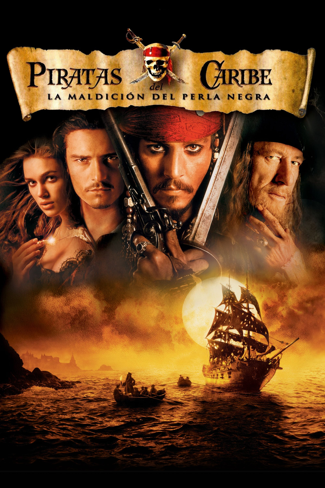
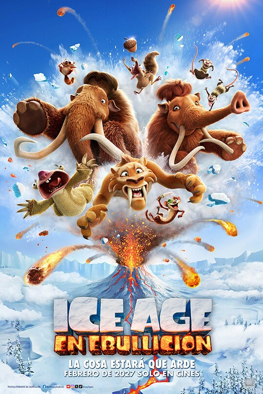
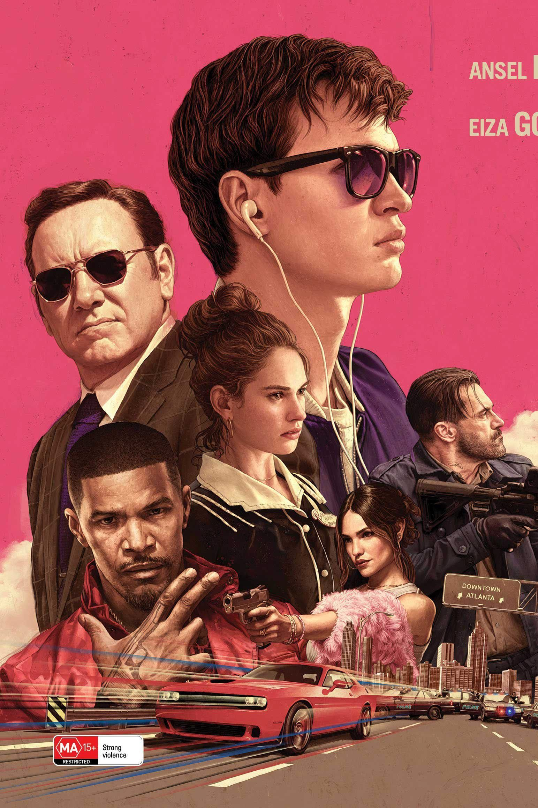
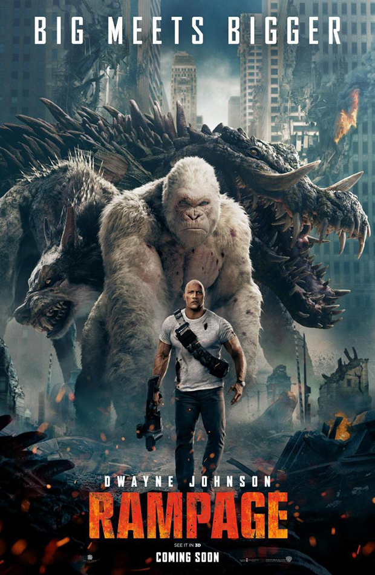
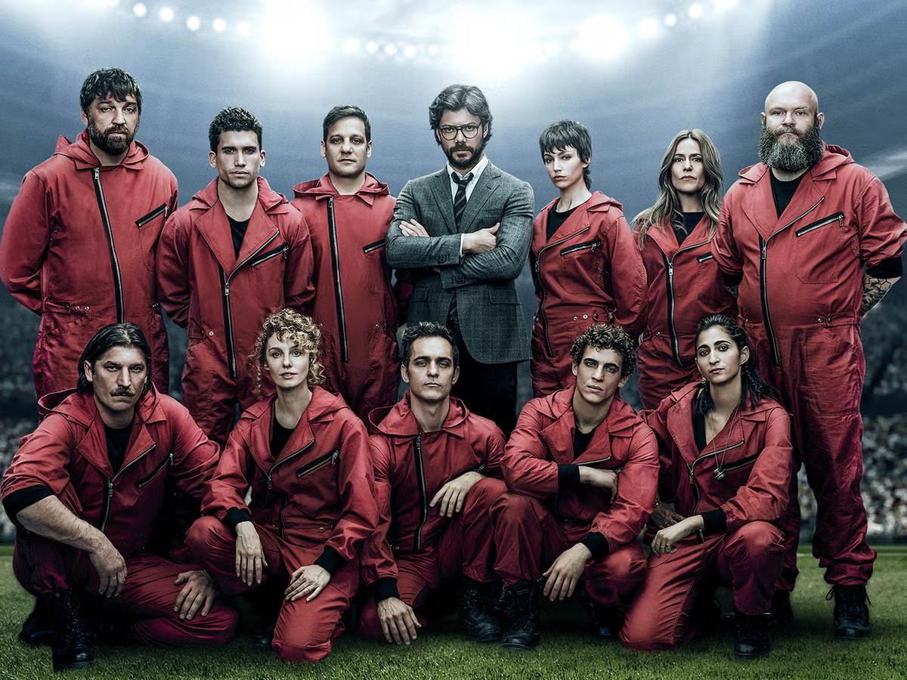
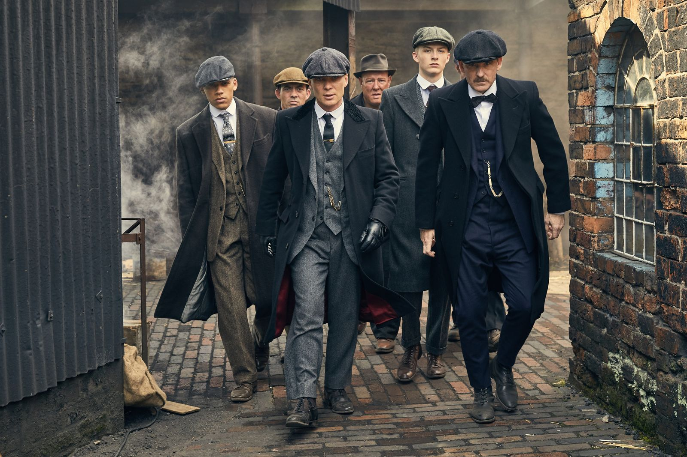

Piratas del Caribe
Una emocionante aventura en alta mar, donde el carismático capitán Jack Sparrow se enfrenta a peligrosos enemigos y busca tesoros legendarios. La película combina acción, humor y un toque de fantasía, transportando a los espectadores a un mundo lleno de piratas, maldiciones y misterios por descubrir.

La hera de hielo
La historia es sobre un grupo de animales, los cuales los perso najes principales son uno mamut, un tigre dientes de sable y un perezoso, los cuales se embarcan en una aventura para devolver a un bebé humano a su tribu. A lo largo del camino, enfrentan desafíos y peligros, pero también forman un vínculo especial entre ellos. La película combina humor, acción y momentos emotivos, ofreciendo una experiencia entretenida para toda la familia.

Baby
la pelicula trata sobre un joven que se ve envuelto en el mundo del crimen y la música. A medida que se adentra en este mundo, enfrenta desafíos y dilemas morales, mientras lucha por encontrar su identidad y propósito. La historia combina elementos de acción, drama y música, ofreciendo una experiencia cinematográfica intensa y emocional.

Rampage
La historia sigue a un simio gigante llamado Rampage, que se vuelve loco y comienza a destruir ciudades. Un científico intenta controlar la situación y descubre que el comportamiento del simio está relacionado con una sustancia química experimental. La película combina acción, suspense y efectos especiales, ofreciendo una experiencia cinematográfica emocionante.

Casa de papel
La historia sigue a un grupo de personas que planean un robo a la fábrica de moneda de España. A lo largo del camino, enfrentan desafíos y peligros, pero también forman un vínculo especial entre ellos. La película combina acción, suspense y momentos emotivos, ofreciendo una experiencia entretenida para toda la familia.

peaky blinders
Paso 1: Controlar la calle (Temporadas 1 y 2): Tras regresar traumatizados de las trincheras de la Primera Guerra Mundial, los hermanos Shelby usan su banda callejera para adueñarse de las apuestas ilegales de su ciudad (Birmingham) y luego expandirse a Londres a base de sangre, pólvora y alianzas incómodas.Paso 2: Dinero internacional (Temporadas 3 y 4): El negocio crece y se diversifica. El clan deja de ser un grupo de matones y se convierte en una corporación legítima que trafica con el contrabando de alcohol durante la Ley Seca y lidia con la mafia neoyorquina y aristócratas rusos exiliados.Paso 3: El poder político (Temporadas 5 y 6): Para protegerse para siempre de la ley, Tommy Shelby se infiltra en el gobierno y se convierte en miembro del Parlamento británico. En las temporadas finales, la guerra ya no es con navajas en los callejones, sino con trajes caros en despachos gubernamentales, enfrentándose cara a cara con el ascenso del fascismo en Europa antes de la Segunda Guerra Mundial.